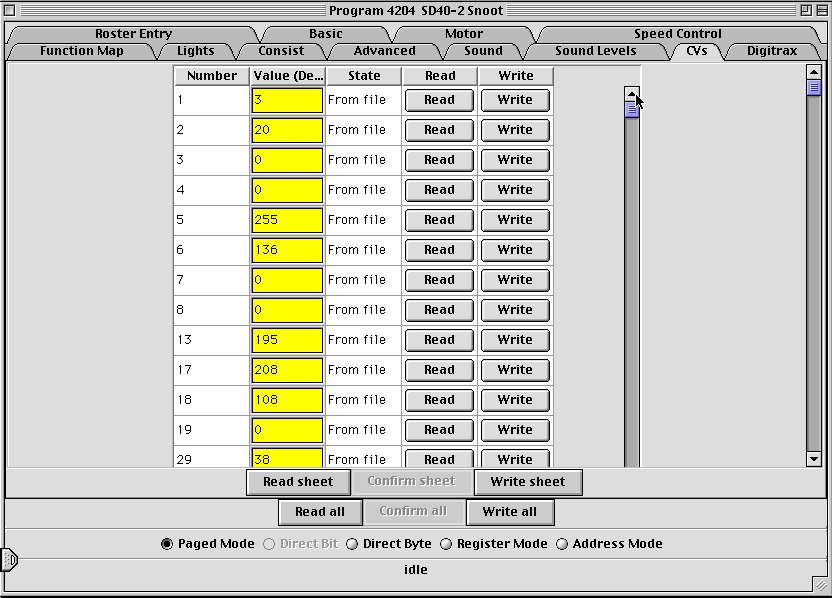

DecoderPro Comprehensive Programmer
Global CV Listing Pane
For the hard-core programmer, this pane is a listing of the raw CV
data by CV number, with data in decimal format.
You may change data by typing new numbers into the Values window.
State
shows the validity of the data, whether it was taken From file (the
decoder information saved in the Roster), Edited,
Read
directly from the decoder, Stored to the decoder
or if the status is Unknown. Note the scroll bar on
the right side of the listings. You may scroll up or down to access all
of the CV listings.
You may Read or Write individual CVs using the buttons
in their row. On this page, a Read sheet or Write sheet operation
is the same as a Read all or Write all. Again,
a reminder: you can only read CVs if your command station has that capability.

Site hosted by: